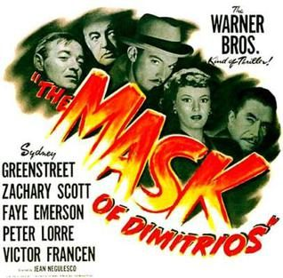

The Mask of Dimitrios
Starring: Sydney Greenstreet, Zachary Scott, Faye Emerson
Director: Jean Negulesco
Writer: Eric Ambler
Producer: Henry Blanke
The Mask of Dimitrios is a 1944 American film noir starring Sydney Greenstreet, Zachary Scott, Faye Emerson, Peter Lorre, and Victor Francen. Directed by Jean Negulesco, it was written by Frank Gruber, based on the 1939 novel of the same title written by Eric Ambler. Scott played the title role, of Dimitrios Makropoulos, in his film debut.
Trivia
- The novel The Mask of Dimitrios was published in 1939.
- The character Dimitrios Makropoulos in Ambler's book drew upon the early career of notorious munitions kingpin and "merchant of death" Sir Basil Zaharoff, whose life, wealth, and villainy were also portrayed in the titular character of the Orsen Welles mystery thriller Mr. Arkadin.
- The assassination attempt involving Dimitrios was based on a 1923 plot against the agrarian reform prime minister of Bulgaria, Aleksandar Stamboliyski, who survived the February 2, 1923, shooting but was murdered by right-wing secret police on June 14 following a successful coup d'état.
Previous Showings
2 Runs • 0 Festivals
Original Billings: 1 run (September 21, 1944)
Original Run: September 21, 1944 (Thursday - Saturday)
All runs on record (2):
- September 21, 1944 (Thursday - Saturday)Sydney Greenstreet, Peter Lorre
- January 16 - 19, 1997w/ Moon Over Miami, The Blue Dahlia